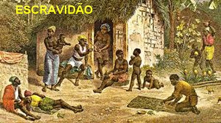
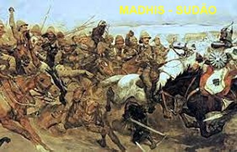

�UMA GRANDE ESPERAN�A�
O PATR�O TATUAVA OS ESCRAVOS
Na verdade o sofrimento de
Bakhita n�o se restringiu somente aos maus tratos. Com efeito, um dos piores
momentos que passou e que ela mesma descreve a 
Com efeito, um dos piores momentos de Bakhita foi o que ela mesma narra e que superou todos os limites de perversidades, como se ver� abaixo.
�Chegou a minha vez, n�o tinha for�as nem para me mexer, mas, o olhar do patr�o me fez deitar por terra imediatamente. Se fazia o desenho convencional no corpo do escravo para marcar os lugares que iria ser tatuado e era com farinha branca. Pegaram a navalha e fizeram seis talhos no meu peito, sessenta no ventre, e quarenta e oito no bra�o direito, Oh! � imposs�vel descrever como eu me sentia principalmente quando espalhou o sal nas feridas para tornar mais evidente o b�rbaro desenho. Sofrimento atroz! Quase desmaiada pela dor e perda de sangue fui levada para a minha enxerga. Nas intermin�veis noites, ardendo de febre e de sede, eu esperava em v�o o al�vio de algum rem�dio ou de uma palavra de conforto�.
Bakhita e a companheira, um dia presenciaram uma discuss�o do general com a esposa, e observaram que a mulher venceu a discuss�o, e ent�o o general muito nervoso descarregou sua raiva sobre elas, justamente nelas as testemunhas inocentes que n�o tiveram nenhuma participa��o na briga, e mais, ordenou aos soldados que as flagelassem.
�A vara golpeando v�rias vezes na minha coxa, arrancou a pele e cortou a carne, formando no local uma grande ferida que nunca cicatrizou�. E concluiu: �Quantas de minhas companheiras morreram depois de terem sido barbaramente chicoteadas. Eu n�o morri por um milagre de DEUS que me destinaria coisas melhores�.
Essa palavra de Bakhita nos faz compreender o que ocultamente acontecia: ela s� n�o morreu em raz�o de uma milagrosa assist�ncia sobrenatural de DEUS, que lhe reservava um pr�mio maravilhoso!
VENDIDA PARA UM GENERAL

V�rias miss�es cat�licas, fundadas pelo Padre Daniel Comboni encontravam-se na trajet�ria de sua desastrosa invas�o: tudo era saqueado e destru�do. Inclusive j� existia projeto entre os adeptos da seita, para ocupar a capital de Codofan, �El Obeid�.
Essas invas�es isl�micas se espalharam por todos os cantos. O General que havia comprado Bakhita resolveu voltar imediatamente para o seu pa�s. E assim, vendeu a maior parte dos seus escravos, ficando com apenas 10, e entre eles, Bakhita que o acompanhou at� a Turquia.
SURGIU UMA ESPERAN�A
Em Kartum, ela tamb�m � colocada a venda. Estando em seus aposentos, recebeu ordem de deixar o hotel e seguir um senhor que nunca tinha visto, e que a conduziu para o seu pr�ximo dono. E quem ser� esse homem? Era um Diplomata: Senhor Calixto Legnani, C�nsul da It�lia em Cartum, Sud�o.
Bakhita cheia de curiosidade ficou observando a mulher que veio busc�-la. Ela usava uma faixa branca que prendia os seus cabelos negros; seu vestido era branco e ela revelava certa educa��o, pois com palavras gentis convidou Bakhita a acompanh�-la. E no caminho a mulher falava com muita do�ura, como se j� fosse uma amiga.
Ao chegarem diante de um Edif�cio, havia uma bandeira branca, vermelha e verde, a mulher disse:�ESTE � O EDIF�CIO DO CONSULADO ITALIANO. O C�NSUL TE COMPROU PARA TE DAR A LIBERDADE�.
Bakhita compreendeu apenas uma coisa:�Desta vez serei verdadeiramente Bakhita, isto �, a mulher afortunada�.
A senhora conduziu Bakhita a um ambiente apropriado, onde ela pode se lavar e inclusive, a ajudou vestir a roupa que ali estava reservada para ela.
Foi o primeiro vestido ap�s anos de escravid�o, conforme a palavra da pr�pria Bakhita. E assim foi apresentada ao C�nsul: Senhor Calixto Legnani. E com muito medo e bastante timidez ela foi conduzida a presen�a dele, e ao chegar ele disse:
�N�o tenhas medo� aqui estar�s bem e todos gostar�o de ti. Ajudar�s a camareira nos pequenos servi�os dom�sticos. Ningu�m te maltratar�. Agora podes ir e permane�a tranquila e alegre�.
AQUELA FOI A �LTIMA VENDA
Foi � �ltima vez na sua vida que Bakhita, uma mulher t�o sofrida era vendida. Passaram-se dois anos de tranquilidade e de paz para toda aquela regi�o e pessoalmente para Bakhita. Mas esta t�o apreciada paz foi interrompida, pois os �Madhis� abomin�veis revolucion�rios, tinham em mira alcan�ar Kartum, justamente onde Bakhita estava. A not�cia espalhou, e o C�nsul imediatamente providenciou viajar para It�lia. Ela muito preocupada com aqueles acontecimentos, ficava tristonha e com medo, pois sabia da maldade dos �Madhis�. Ent�o pensava:�Ser� que o senhor C�nsul levar� Bakhita com ele?�
Depois meditava: �N�o sei por que, mas quando ouvi falar no nome da It�lia, da qual ignorava a beleza e os encantos que ela possu�a, nasceu no meu cora��o um ardente desejo de seguir o patr�o. Ele me queria bem, por isso ousei lhe pedir para me levar consigo � It�lia. O C�nsul fez algumas obje��es, mas eu insisti tanto que ele resolveu atender ao meu pedido�.
DE VIAGEM PARA A IT�LIA
E os preparativos para a viagem tiveram que come�ar com a maior urg�ncia, pois um bando dos militantes madhistas estava �s portas de Kartum. Na viagem seguiu Bakhita, o C�nsul senhor Calixto Legnani, um comerciante de Veneza senhor Augusto Michieli e um africano.
A partida aconteceu depois do Natal de 1884. Chegaram a Suakin, atrav�s do mar Vermelho, em janeiro de 1885. Durante o m�s, enquanto esperavam o navio que devia lev�-los � It�lia, o C�nsul e o amigo ficaram sabendo que um bando de revolucion�rios assediou Kartum, devastaram e saquearam todas as propriedades, fazendo as pessoas de escravos.
Bakhita pensou: �Se eu tivesse ficado l�, tamb�m teria sido levada. E o que teria sido de mim?�
Ainda em fins de Janeiro de 1885, o C�nsul embarcou para Suakin rumo � It�lia. Bakhita ficou deslumbrada com a viagem e se perguntava:
-�Quem ser� o patr�o destas coisas maravilhosas?� Ela feliz como nunca esteve, ficava admirada e radiante com a imensid�o do mar! Olhando o sol, a lua e as estrelas, nascia um sorriso em seus l�bios e ela ficava pensando: Quem � o Mestre (Patr�o) dessas coisas bonitas?
Bakhita ainda n�o era cat�lica, mas tinha uma alma reta e sabia admirar as belezas e as tonalidades da natureza t�o lindas, �criadas por um patr�o t�o poderoso�, que ela n�o conhecia, mas que haveria de conhecer. DEUS, miseric�rdia e bondade infinita, em que pese todos os sofrimentos e tristezas da vida de Bakhita, protegia aquela preciosa p�rola negra, o SENHOR cuidava dela, para erigi-la como uma m�rtir, o que certamente atrairia para ela e seu povo gra�as e favores muito especiais, preparando-a ademais para uma alt�ssima voca��o.
Se assim n�o fosse, de que outra maneira se poderia explicar a sua capacidade de sofrer, sua resigna��o e paci�ncia, jamais se queixando dos abomin�veis sofrimentos e n�o desejando o mal para os seus algozes?
CHEGARAM A GENOVA
A viagem transcorreu agradavelmente e logo chegaram a G�nova, com desembarque definitivo. Mas aconteceram outras surpresas na sua vida. Pelo fato de ser uma negra bonita, com tra�os delicados, olhos cor de am�ndoas, chamou a aten��o da senhora Maria Turina Michieli, que veio ao porto esperar o marido senhor Augusto Michieli. E logo decidiu: queria Bakhita para ela e chegou a ficar severamente zangada com o marido. Ent�o o Senhor C�nsul Calixto Legnani, resolveu ceder Bakhita para esse casal como presente, pois eram rec�m-casados e amigos dele. Ent�o Bakhita foi para Zianigo (que � uma fra��o territorial de Mirano Veneto) com o casal, e l� nasceu Mimmina que � a primeira filhinha do casal Michieli, e Bakhita ficou tomando conta da pequenina, como uma bab�, e passou a se vestir � moda europ�ia ajudada pela senhora Maria Turina.
Desse modo, Bakhita preencheu a sua vida com prazer, tomando conta de Mimmina e com muito capricho na execu��o dos afazeres dom�sticos. Mas nos momentos a s�s, lembrava-se dos seus familiares e pedia a DEUS por todos eles.